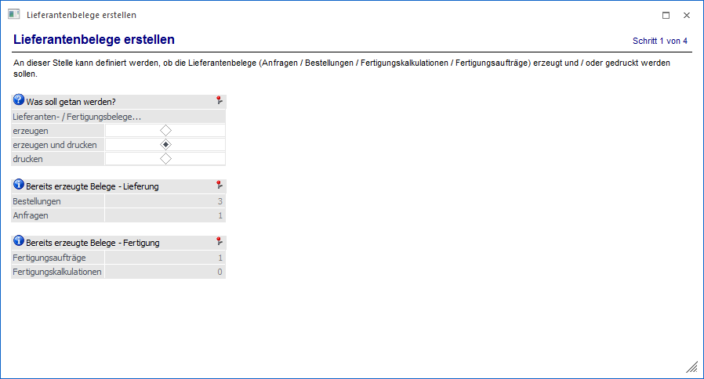
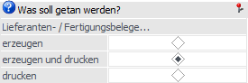
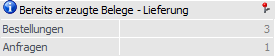
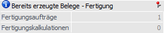

In dem Bereich "Lieferantenbelege erstellen" wird zunächst definiert, ob Lieferanten- bzw. Fertigungsbelege erzeugt und / oder gedruckt werden sollen.

Folgende Einstellungen und Informationen stehen zur Verfügung:
Was soll getan werden

Ø Lieferanten- / Fertigungsbelege…
An dieser Stelle wird der weitere Ablauf des Programms definiert, d.h. was das Programm "Lieferantenlieferungen erstellen" machen soll. Hierbei stehen folgende Einstellungen zur Verfügung:
ü Lieferanten- / Fertigungsbelege
erzeugen
Es werden Lieferanten- bzw. Fertigungsbelege als nicht gedruckte /
gerechnete Belege erzeugt und nicht ausgedruckt.
ü Lieferanten- / Fertigungsbelege
erzeugen und drucken
Es werden Lieferanten- bzw. Fertigungsbelege als nicht
gedruckte / gerechnete Belege erzeugt und direkt in der zuvor (im Programm
"Bestellvorschlag erstellen") definierten Belegstufe ausgedruckt.
ü Lieferanten- / Fertigungsbelege
drucken
Es werden alle über dieses Programm bereits erzeugten (aber nicht
gedruckten) Belege in der zuvor (im Programm "Bestellvorschlag erstellen")
definierten Belegstufe ausgedruckt.
Hinweis
Wurde eine Auswahl getroffen, so kommt man durch Drücken des Buttons "Vor" zum nächsten Bereich des Assistenten. Welcher dieses ist, ist abhängig von der zuvor getroffenen Einstellung. Bei den ersten beiden Auswahlen kommen man jeweils zum Bereich "Lieferantenbelege erzeugen", bei "drucken" zu dem Bereich "Lieferantenbelege drucken".
Bereits erzeugte Belege - Lieferung

Ø Bestellungen / Anfragen
An dieser Stelle wird angezeigt, wie viele Bestellungen / Anfragen bereits erzeugt, aber noch nicht gedruckt wurden.
Bereits erzeugte Belege - Fertigung

Ø Fertigungsaufträge / Fertigungskalkulationen
An dieser Stelle wird angezeigt, wie viele Fertigungsaufträge / Fertigungskalkulationen bereits erzeugt, aber noch nicht gedruckt wurden.